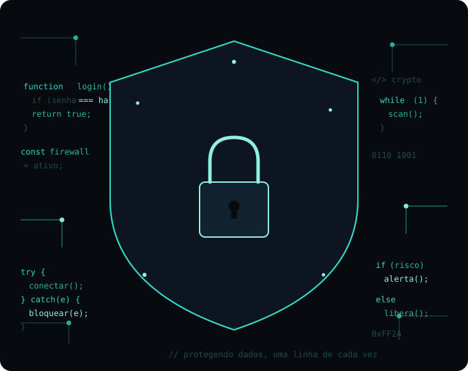

Cibersegurança é o conjunto de práticas, ferramentas e cuidados usados
para proteger computadores, celulares, redes e dados contra acessos não autorizados,
invasões e roubo de informação.
Por que importa? Ataques cibernéticos afetam desde pessoas comuns até
grandes empresas, causando roubo de identidade, extorsão e perda de dados.
US$ 10,5 trilhões por ano até 2025
3ª maior "economia" do mundo, atrás só de EUA e China · Fonte: Cybersecurity Ventures
Rede
Aplicativos
Dados
Operacional
Resposta a incidentes
Comportamento humano
→ E quem trabalha protegendo tudo isso na prática?
Carreiras da área
Quem trabalha com cibersegurança atua em frentes bem diferentes:
analista de segurança (monitora e defende sistemas no dia a dia),
pentester (ataca de propósito os sistemas da própria empresa pra
achar falhas antes dos criminosos) e profissionais de
resposta a incidentes (entram em ação quando um ataque já aconteceu).
O que pouca gente sabe: existe o perito forense digital
— profissional que investiga crimes digitais de verdade (como um CSI do mundo virtual),
reconstruindo o que aconteceu num ataque ou golpe pra apresentar como prova em processos
judiciais. Área pouco conhecida, mas essencial pra responsabilizar criminosos.
→ E por que será que as empresas pagam tão bem por essas vagas? Porque os golpes são
muito mais comuns do que parece: só no último ano, o Brasil registrou
34 bilhões de tentativas de golpes digitais.

Como funciona os golpes cyberneticos?
Os golpes cibernéticos (ou cybergolpes) funcionam explorando principalmente duas vulnerabilidades: falhas técnicas em sistemas/dispositivos e a psicologia humana (engenharia social). Na maioria dos casos, os criminosos não precisam "hackear" um sistema complexo; eles convencem a própria vítima a entregar seus dados ou acesso.
1. As Principais Técnicas de Ataque
Engenharia Social (O fator humano):
É a manipulação psicológica. O golpista cria cenários de urgência, medo, autoridade ou ganância para fazer a vítima agir sem pensar.
Phishing (Pescaria de dados):
Envio de e-mails, SMS (Smishing) ou mensagens no WhatsApp falsos se passando por bancos, lojas ou órgãos governamentais. Eles contêm links para páginas clonadas que roubam senhas e dados de cartão.
Malware e Ransomware:oftwares maliciosos instalados no dispositivo da vítima (muitas vezes ao clicar em links suspeitos ou baixar arquivos comprometidos). O ransomware, em especial, sequestra e criptografa os dados do computador, exigindo um resgate financeiro.
Usurpação de Identidade e Clonagem:Roubo ou criação de perfis fakes em redes sociais e aplicativos de mensagem (como o "golpe do filho com número novo" no WhatsApp) para pedir dinheiro a amigos e familiares.
Ataques de Força Bruta e Credenciais Vazadas:Testes automatizados de milhares de combinações de senhas ou uso de bancos de dados vazados para invadir contas de pessoas que usam a mesma senha em vários sites.
Senha Forte
Como vimos nas técnicas de ataque (como o Ataque de Força Bruta), senhas previsíveis ou repetidas deixam suas contas extremamente vulneráveis. Entender a diferença entre uma senha forte e fraca é a primeira linha de defesa.
O que torna uma senha fraca vs. forte?
Senhas Fracas (Vulneráveis):
Usam sequências óbvias (ex: 123456, qwerty), dados pessoais (datas de nascimento, nomes de pets) ou palavras comuns do dicionário. Elas podem ser quebradas por softwares de ataque em questão de milissegundos.
Senhas Fortes (Seguras):
Possuem no mínimo 12 a 16 caracteres, misturando letras maiúsculas, minúsculas, números e símbolos especiais (ex: @, #, $). Não contêm padrões lógicos nem informações pessoais.
Como criar uma senha realmente forte:
Método da Passphrase (Frase de Senha):
Crie uma frase longa e aleatória combinando palavras sem relação entre si. Exemplo: Gato3#CafeLuz!Nuvem8 (muito mais fácil de lembrar e extremamente difícil de quebrar).
Evite Reutilização:
Nunca use a mesma senha para múltiplos serviços. Se um site for vazado, todas as suas outras contas ficarão expostas.
Use um Gerenciador de Senhas:
Ferramentas seguras que geram e armazenam senhas complexas e criptografadas para você.
Quiz sobre Cybersecurity
Agora vamos testar os conhecimentos adquiridos ao longo da apresentação com um quiz interativo.
A revisão vai cobrir todos os tópicos abordados de forma dinâmica e vamos ter premios para os ganhadores!.